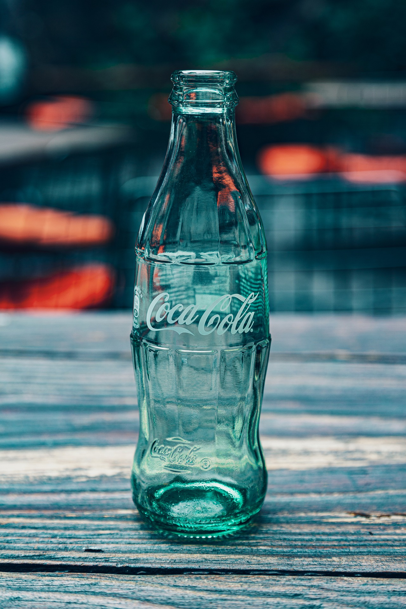

One of Warhol’s most famous and recognisable works is undoubtedly 'Shot Sage Blue Marilyn' A portrait of the famous American actress Marilyn Monroe. This piece would be sold for over 190 million dollars at an auction in 2022.
It is somewhat strange to think that a famous painting from an artist would be a simple Coca-Cola bottle. However for Andy Warhol this was 'Coca-Cola 3'. Like most of Pop-Art 'Coca-Cola 3' celebrates popular culture. This is very unique as art forms rarely celebrated Pop-Culture. Another facet that made Pop-Art and Warhol's works so notable
